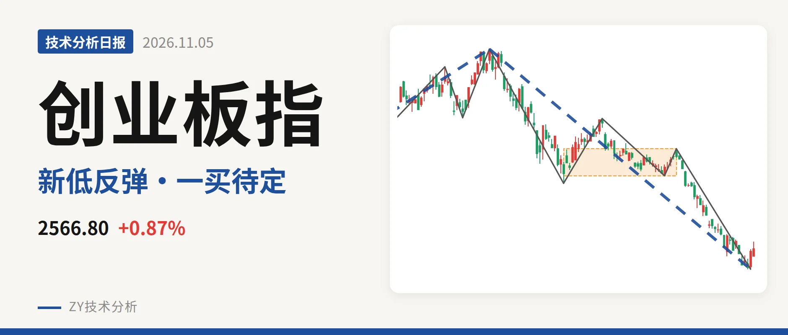
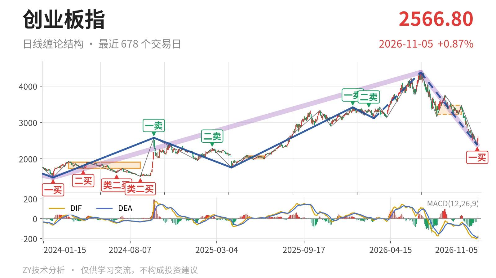
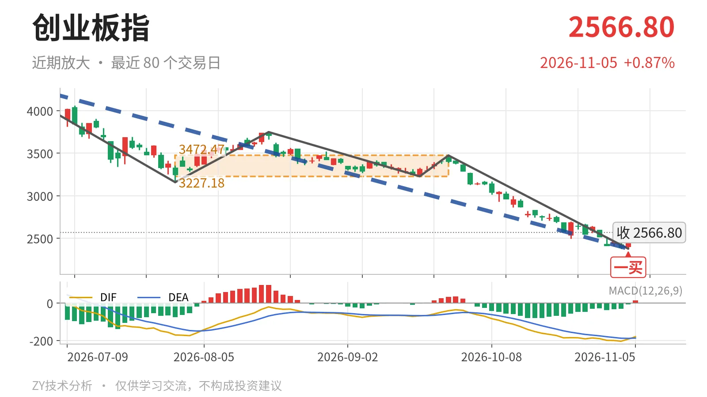

创业板指｜2376点一买反抽未成笔

最近日线中枢 3227.18—3472.47点，收盘位于中枢之下
一句话：现价仍在最近日线中枢下方，反弹未成笔，结构偏弱。
🧭 走势结构：更大级别上涨未坏，日线下跌段还在延续
更大级别仍处在2024年2月5日以来的上涨结构里，6月25日开始的下跌段只是回调，且没有结束。2021年7月22日至2024年2月5日的下跌走势已结束；2024年2月5日至2026年6月25日的上涨走势没有结束；6月25日至11月4日的下跌段还在延续，从4380.41点一路压到2376.28点，跌幅45.8%。日线线段上，这段下跌内含5笔，是当前主跌段，3月9日至6月25日的上涨段在4380.41点后转入回调，3月9日的线段三买3111.88点也已经失守，说明上涨段的回撤已超出浅调。

📍 中枢与位置：现价跌破最近日线中枢下沿
最新收盘2566.80点，位于7月30日至9月22日日线笔中枢3227.18—3472.47点之下，低于下沿约20.5%。该中枢中轴3349.83点尚未完成，价格跌穿中枢后，中枢已有下移。更下方的2022年4月27日至2023年8月4日线段中枢落在2122.32—2282.65点，上沿2282.65点附近是长周期结构支撑。
🧨 买卖点：2376点一买先看笔级别
11月4日出现日线一买2376.28点，所在笔9月22日至11月4日已经结束。11月5日最高反弹至2625.99点、最低2493.67点，只有1根K线，反弹尚未成笔，因此这个一买只能先当笔级别的一买看，不构成线段级转折。1月13日一卖3416.84点、2月25日二卖3363.18点一个比一个低，但之后6月25日创出4380.41点新高，这两个卖点已退回局部结构。

⚖️ 背驰：下跌动能减弱，但DIF仍创新低
9月22日至11月4日的下跌笔与6月25日至7月30日同向比较，绿柱面积1107小于前值1837，但DIF低点-204.5低于前值-171.1。这是价格新低、DIF新低，而绿柱面积没有同步放大，不构成标准的新低不新弱，只说明第二段下杀的绿柱面积较第一段收缩。最新DIF在-180.1，仍在零轴之下，柱值14.8，反弹力度还没走出来。
🧭 关键位置观察：反抽不回3227点，三卖结构会坐实
上方最近观察位在3227点附近，反抽若回不到该点上方，结构上构成日线笔级别三卖。重新站上3227点，6月25日以来的回落更可能只是中枢扩展；下方看2283点附近，若后续回踩不破该位上沿，仍属长线段中枢上方整理。当前价格低于最近中枢下沿约20.5%，反弹未成笔，DIF仍在零轴下方，判断结构偏弱：弱在未回中枢、反弹未成笔。
⚠️ 本文为基于公开行情数据的缠论技术结构记录，由程序自动计算并生成，仅供学习交流，不构成任何投资建议。市场有风险，投资需谨慎。